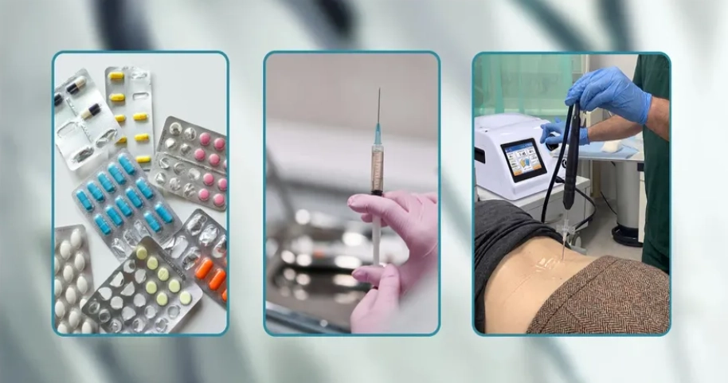

Gromadzimy rzetelną, przystępnie opisaną wiedzę o bólu różnego pochodzenia, metodach jego leczenia oraz medycynie paliatywnej.
Wyjaśniamy różne rodzaje terapii przeciwbólowej, m.in.: farmakoterapię, blokady przeciwbólowe, kriolezję, wlewy dożylne oraz kolagen i kwas hialuronowy.
Opisujemy także leczenie ran przewlekłych, fizjoterapię i terapię manualną oraz wsparcie psychiatryczne w bólu.
W Portalu Edukacyjnym KOI rozumiemy, jak destrukcyjny wpływ na życie może mieć ból – zarówno ten ostry, nagły, jak i przewlekły, trwający miesiącami czy latami. Leczenie bólu to interdyscyplinarna dziedzina medycyny, która koncentruje się na diagnozowaniu, łagodzeniu i kontrolowaniu różnego rodzaju dolegliwości bólowych.
Z pomocy specjalistów leczenia bólu warto skorzystać, gdy ból utrudnia codzienne funkcjonowanie, sen, pracę, aktywność fizyczną lub negatywnie wpływa na samopoczucie. Istotą skutecznego leczenia bólu jest indywidualne podejście do pacjenta, uwzględniające przyczynę bólu, jego charakter oraz ogólny stan zdrowia.
Naszym celem jest nie tylko uśmierzenie bólu, ale przede wszystkim poprawa jakości życia pacjenta i przywrócenie mu sprawności.
W Polsce szacuje się że około 27% dorosłych Polaków cierpi na ból przewlekły. Przekłada się to na około 8,5 miliona osób. W grupie osób starszych ten odsetek jest znacznie wyższy. U osób powyżej 65. roku życia ból przewlekły dotyka nawet 50–55% populacji. Ważne jest, aby nie bagatelizować problemu i szukać profesjonalnej pomocy, która może znacząco poprawić jakość życia.
Absolutnym „królem" dolegliwości pozostaje kręgosłup, szczególnie w odcinku lędźwiowym i szyjnym. Jest to często bolesna cena, jaką płacimy za siedzący tryb życia i brak odpowiedniej dawki ruchu. Tuż za nim plasują się bóle stawów (głównie kolanowych i biodrowych) wynikające ze zmian zwyrodnieniowych oraz uciążliwe, nawracające migreny i napięciowe bóle głowy, które potrafią wyłączyć pacjenta z życia na wiele dni.
Coraz częściej specjaliści spotykają się także z:
Choć przyczyny są różne, wspólnym mianownikiem wizyt jest zazwyczaj moment, w którym standardowe leki dostępne bez recepty przestają wystarczać, a ból z sygnału ostrzegawczego zmienia się w uciążliwą codzienność.
Portal Edukacyjny KOI w przystępny sposób przedstawia wszechstronne podejście do terapii bólu. W KOI opisujemy szeroki wachlarz metod stosowanych w łagodzeniu bólu przewlekłego, jakiego doświadczają osoby borykające się z różnymi problemami zdrowotnymi.
Opisujemy takie dolegliwości bólowe jak: bóle kręgosłupa i pleców, bóle głowy i twarzy, bóle kończyn, stawów i mięśni, bóle po urazach i operacjach, bóle nowotworowe, bóle związane z układem nerwowym, i inne.
Tłumaczymy, że w leczeniu bólu liczy się nie tylko doraźne uśmierzenie cierpienia, ale przede wszystkim identyfikacja źródła bólu oraz przywrócenie pacjentowi pełnej sprawności i komfortu życia.
To jedna z najczęstszych przyczyn wizyt w gabinetach. Wyjaśniamy, jak leczy się stany ostre i przewlekłe, takie jak:
Opisujemy, jak diagnozuje się i leczy dolegliwości, które często wyłączają pacjentów z codziennego funkcjonowania:
Wyjaśniamy, jak leczy się ból wynikający ze zużycia tkanek oraz procesów zapalnych:
Ból wynikający z uszkodzenia lub dysfunkcji układu nerwowego, często opisywany jako pieczenie, mrowienie lub kłucie:
W opiece nad pacjentem onkologicznym priorytetem jest maksymalizacja komfortu życia. W leczeniu stosuje się drabinę analgetyczną WHO, dostosowując dawki leków do indywidualnych potrzeb pacjenta, minimalizując jednocześnie skutki uboczne.
Opisujemy, jak wspiera się proces rekonwalescencji, m.in. w przypadku:
Leczenie bólu prowadzą wykwalifikowani specjaliści, którzy posiadają wiedzę i doświadczenie związane z terapią bólu. Skuteczne leczenie bólu opiera się na zrozumieniu i uwzględnieniu indywidualnych potrzeb pacjenta. W Portalu Edukacyjnym KOI wyjaśniamy, jak specjaliści dobierają odpowiednie metody, tak aby leczenie było bezpieczne i skuteczne, korzystając z najnowszych osiągnięć medycyny. Wszystko to ma na celu złagodzenie bólu i poprawę jakości życia, przy minimalizacji negatywnych skutków ubocznych.
Istnieje wiele metod leczenia bólu, w zależności od przyczyny i stopnia nasilenia pozwalających na uzyskanie znaczącej poprawy. Leczenie bólu może być skuteczne dzięki łączeniu różnych metod, takich jak leki przeciwbólowe, metody naturalne czy też specjalistyczne terapie. Ważne jest aby nie prowadzić samodzielnego leczenia, a do terapii podchodzić w sposób kompleksowy, po konsultacji z lekarzem specjalistą, aby uniknąć skutków ubocznych.
W Portalu Edukacyjnym KOI opisujemy podejście oparte na medycynie personalizowanej. Ból ma wiele twarzy, dlatego metody dobiera się tak, aby uderzały precyzyjnie w jego źródło, a nie tylko maskowały objawy. Przedstawiamy następujące metody leczenia, m.in.: farmakoterapia, blokady przeciwbólowe, kriolezja, termolezja, wlewy dożylne, kolagen, kwas hialuronowy.
Nowoczesna farmakoterapia nie opiera się na schematach „z pudełka". Jej podstawą jest multimodalność – łączenie różnych grup leków, aby uzyskać maksymalny efekt przeciwbólowy przy minimalnych dawkach. Kluczowe są bezpieczeństwo, unikanie interakcji i zapobieganie przewlekłym skutkom ubocznym.
To metoda „u źródła". Pod kontrolą USG precyzyjnie podaje się lek znieczulający i przeciwzapalny bezpośrednio w okolicę uciśniętego nerwu lub bolącego stawu.
Innowacyjna metoda małoinwazyjna, polegająca na czasowym wyłączeniu przewodnictwa nerwowego poprzez działanie niskiej temperatury (ok. –70°C).
Zaawansowana metoda małoinwazyjna wykorzystująca fale radiowe o wysokiej częstotliwości. Poprzez wytworzenie kontrolowanej temperatury w otoczeniu zakończeń nerwowych, blokujemy przesyłanie sygnałów bólowych do mózgu.
Pozwalają na 100% przyswajalność substancji leczniczych z pominięciem układu pokarmowego. Stosuje się m.in.:
Metoda działa bezpośrednio na aparat ruchu, aby przywrócić mu sprawność mechaniczną:
Terapia bólu obejmuje zarówno podejście farmakologiczne, jak i niefarmakologiczne. Specjaliści stosują różne leki przeciwbólowe, dobierając je w odpowiednich dawkach i kombinacjach, aby dostosować terapię do indywidualnych potrzeb pacjenta. Stosuje się również terapie interwencyjne, takie jak blokady nerwów, kriolezję czy wlewy dożylne.
W leczeniu bólu duży nacisk kładzie się również na podejście holistyczne i niefarmakologiczne. Pacjenci mogą skorzystać z fizjoterapii i rehabilitacji, które mogą pomóc w złagodzeniu napięcia mięśniowego i bólu. Pomocne bywa również wsparcie psychiatryczne, bo problemy bólowe to często cierpienie nie tylko fizyczne.
Leki mogą wyciszyć ból, ale to ruch i terapia manualna „naprawiają" mechanikę organizmu. W leczeniu bólu fizjoterapia jest fundamentem długofalowego sukcesu.
Ból przewlekły to ogromne obciążenie dla układu nerwowego. Często prowadzi do tzw. błędnego koła bólu, gdzie stres i lęk nasilają odczuwanie cierpienia fizycznego.
Innym aspektem związanym z bólem są trudnogojące się rany – opisujemy czyszczenie i leczenie ran przewlekłych z użyciem specjalistycznych narzędzi i opatrunków.
Pacjenci, którzy cierpią na choroby przewlekłe, nieuleczalne lub znajdują się w zaawansowanym stadium choroby mogą liczyć na ulgę w bólu dzięki medycynie paliatywnej, co znacząco przyczynia się do polepszenia ich samopoczucia.
Ból to nie tylko sygnał z układu nerwowego, ale często efekt złożonych procesów tkankowych lub zaawansowanych stanów chorobowych. Dlatego ważnym elementem leczenia jest specjalistyczna opieka nad ranami oraz wsparcie dla osób w najtrudniejszych etapach choroby.
Rana, która nie goi się prawidłowo, staje się źródłem nieustannego, piekącego bólu i znaczącego dyskomfortu psychicznego. W leczeniu podchodzi się do tego problemu procesowo, łącząc chirurgiczną precyzję z nowoczesną technologią.
W sytuacjach, gdy choroby nie można już wyleczyć, priorytetem staje się jakość życia. Medycyna paliatywna to misja przynoszenia ulgi wtedy, gdy jest ona najbardziej potrzebna.
Warto zabrać ze sobą dotychczasową dokumentację medyczną – wyniki badań obrazowych (RTG, MRI, USG), opisy wcześniejszych konsultacji, listę przyjmowanych leków oraz krótki opis charakterystyki bólu (kiedy się pojawia, jak długo trwa, co go nasila i łagodzi).
Leczenie w poradni leczenia bólu opiera się na interdyscyplinarnym podejściu – łączymy farmakoterapię, metody interwencyjne (blokady, kriolezja, termolezja), fizjoterapię i wsparcie psychologiczne, dobierając każdą terapię indywidualnie do pacjenta.
Kriolezja to małoinwazyjna metoda przerywania przewodnictwa nerwowego za pomocą bardzo niskiej temperatury (ok. –70°C). Zabieg wykonuje się pod kontrolą obrazową – przezskórnie wprowadzamy sondę do okolicy nerwu odpowiedzialnego za przewodzenie bólu i kontrolowanie ją schładzamy.
U większości pacjentów efekt przeciwbólowy utrzymuje się od kilku miesięcy do roku, a w wybranych przypadkach nawet dłużej. Skuteczność zależy od źródła bólu, kwalifikacji do zabiegu oraz przebiegu rekonwalescencji.
Medycyna paliatywna znajduje zastosowanie u pacjentów z chorobami przewlekłymi, postępującymi i ograniczającymi życie. Jej celem jest złagodzenie bólu i innych dokuczliwych objawów oraz zapewnienie najwyższej możliwej jakości życia pacjentowi i jego rodzinie.
Ból, niezależnie od intensywności, może znacząco wpłynąć na Twoje samopoczucie i codzienne funkcjonowanie. Nie bagatelizuj go i nie próbuj leczyć się samodzielnie. Wizyta u doświadczonego specjalisty pozwoli na precyzyjne zdiagnozowanie problemu i wdrożenie skutecznego leczenia, co pozwoli Ci odzyskać radość życia.